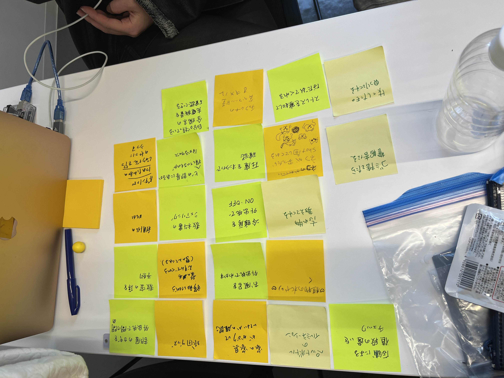

<h1>第2回</h1><br>
<h3>IoTに関して：遠隔で操作、管理させることで、どのような新しいサービスが考えられるか</h3><br>
<h4>グループワークした内容</h4><br>
<br>
<h4>自分で考えたアイディア（スケッチ）</h4><br>
<h5>「忘れ物をしたときに通知で教えてくれる」</h5><br>
忘れ物をしてしまった時に、あともう少し早く気付いていれば取りに帰ることが出来たのに…という思いから考えた<br>
＜手順＞<br>
家から遊びや学校に行くとき、事前に携帯のアプリに持ち物を登録しておく→支度をして家を出る→家から出て5分前後で忘れ物があった場合、通知でお知らせしてくれる<br>
<br>
